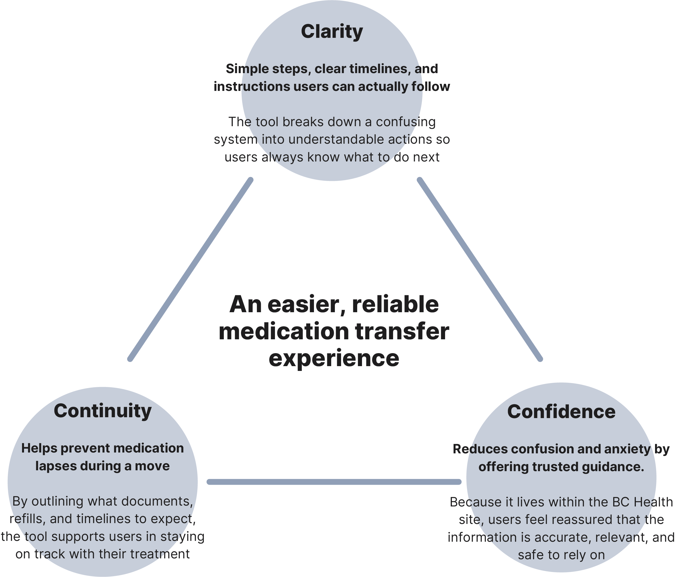
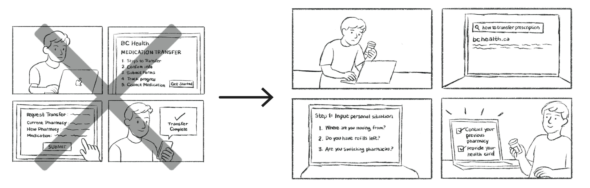

CONTINUING UNIVERSITY PROJECT | SEPTEMBER 2, 2025 - DECEMBER 8, 2025
Moving provinces can be an exciting new chapter, but for many people, it also means dealing with (and for some, discovering) messy healthcare rules and bureaucracy. For those on regular medication, transferring prescriptions between provinces can be confusing, stressful, and poorly documented. I chose this project because I saw a real gap: there’s no centralized, trustworthy, easy-to-follow guide for people moving to British Columbia (BC) from other provinces in Canada, trying to navigate the steps, pharmacies, and different provincial rules. The goal was simple: to make that transition easier and more transparent.
A guided tool that lives in the official BC Health site, a place people already trust when searching for health info. Instead of building a brand-new app (which people might hesitate to download), it will be a supportive, more personalized guide that helps people understand exactly what they need to do to transfer their prescription safely.
To avoid basing the project on assumptions, I used a mix of secondary and primary research.
After gathering all the research, I discovered common pain points. Unclear timelines, inconsistent pharmacy processes, lack of centralized guidance, uncertainty about what documents or steps are required. These all came together to a few recurring themes: confusion, anxiety, distrust in the different information, and a real need for clarity. These findings directly shaped the design: this tool wouldn’t try to “do the transfer for them,” because that’s unrealistic given all the government red tape and varying provincial rules. Instead, it would guide, support, and clarify.
From research, these key insights came up:
Because of this, I grounded the design around three core values:
The tool becomes a trusted guide that walks users step by step through their situation. No assumptions, no surprises.
Originally, I thought about building a tool that directly connected pharmacies across provinces, maybe even automate parts of the transfer. But when I mapped this vision using this design-framework, the gaps became clear.

I redirected the approach. The new concept: a guided tool embedded in the existing BC Health system. That means no need to download anything, and it carries official legitimacy. The tool walks users through a personalized process based on their previous province, whether they have refills left, and whether they’re switching pharmacies; delivering a checklist, timelines, and clear next steps.
This transformation made the concept more realistic, but also more helpful. Instead of promising full automation, it promised clarity, support, and a reduction of uncertainty.
To validate the concept, I shared the idea with people who had moved to BC and with pharmacy staff. Their feedback confirmed the pain points and the need for a trusted, step-by-step resource.
Because it lives inside an official site, it carries trust. Because it’s personalized, it feels realistic. Because it doesn’t promise more than what’s possible, it stays ethically and technically grounded.
Right now, this project is a strong proof-of-concept. The next phase would be building low to mid-fidelity prototypes and running usability tests with real users to refine the flow. I also plan to work with accessibility guidelines to ensure the tool works for all users.
What I learned: real design isn’t about what you want to build. It’s about what you should build, what fits within systems, meets real human needs, and respects constraints. That pivot, from automation to guidance, is what makes this idea honest, realistic, and truly helpful.